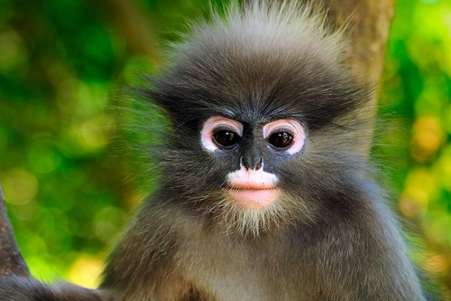

Monkeys
The dusky leaf monkey, spectacled langur, or spectacled leaf monkey (Trachypithecus obscurus) is a species of primate in the family Cercopithecidae. It is found in Malaysia, Burma, and Thailand.
WHERE WILL YOU FIND THEM ?
You will find the monkeys at the monkey cage near the Monkey Trail.